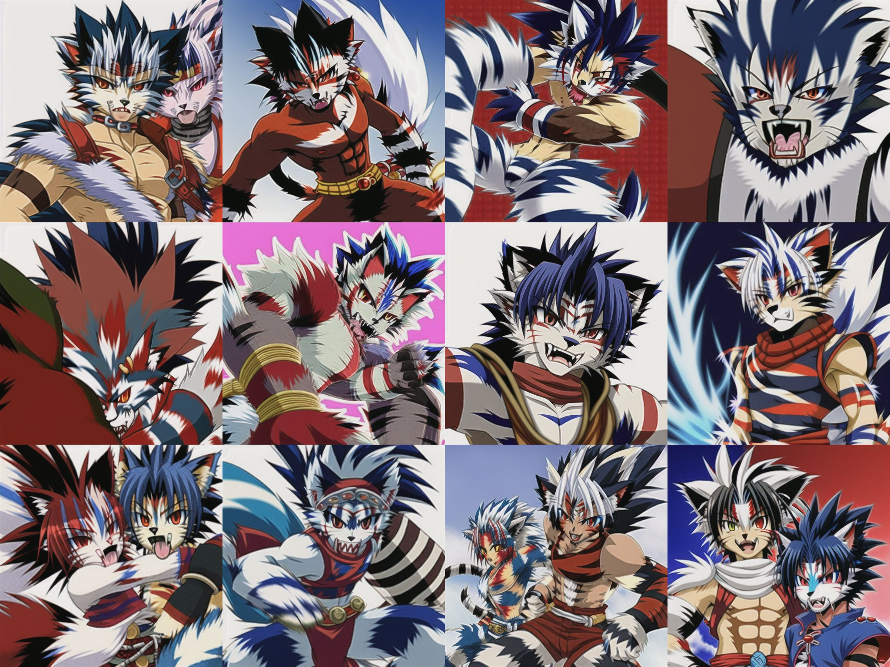

炼丹初体验
数据集说明：25张虎源太，姿势背景画风都各不相同，且没有去掉图片中的字符和水印，像素边长400，只是先试试水。使用BLIP生成tag。
训练说明：token向量数为5，约3600个step，耗时1h45min
生成说明:Sampling steps=28，提示词相关性=11,像素边长512
tag:kogenta-0-*,high quality
反tag:comic,((cropped)),breast,Female sexual organs,Feminization,female,girl,lady,skirt,dress,extra legs,extra heads,extra limbs,skirt,dress,bad anatomy,bad hands,text,error,missing fingers,extra digit,fewer digits,cropped,worst quality,low quality,normal quality,jpeg artifacts,signature,watermark,username,blurry, missing arms,long neck,humpbacked,shadow,lowres,woman,Feminine,bad feet,pregnant,ugly,duplicate,extra fingers,fused fingers,too many fingers,mutated hands,poorly drawn face,mutation,malformed limbs,disfigured,extra limbs,missing arms,missing legs,extra arms,deformed legs,extra legs,hermaphrodite,transsexual,more than 2 knee,
要测试训练模型的水平，首先需要知道tag的重要性
训练结果
500 step: loss=0.1582759
出乎意料。本以为只训练500 step效果应该会很差，没想到却能以另一种角度展示了绘画风格。人物虽然不像虎源太，但总的看来已经类似furry的范畴，毛发学的不错，皮肤人兽结合，只是发型不够到位。这个画风或许会有一部分人喜欢呢……

1000 step: loss=0.1004046
可以看到loss下降了，从生成图来看真的更像虎源太了，让我不得不赞叹这个模型的强悍本领。无论是发型还是皮肤毛发都很接近了。但是缺点仍然有很多，比如图像不够清晰，某些地方显得的很奇怪。